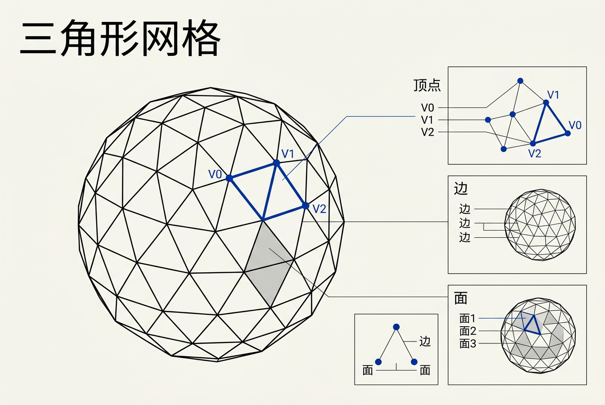
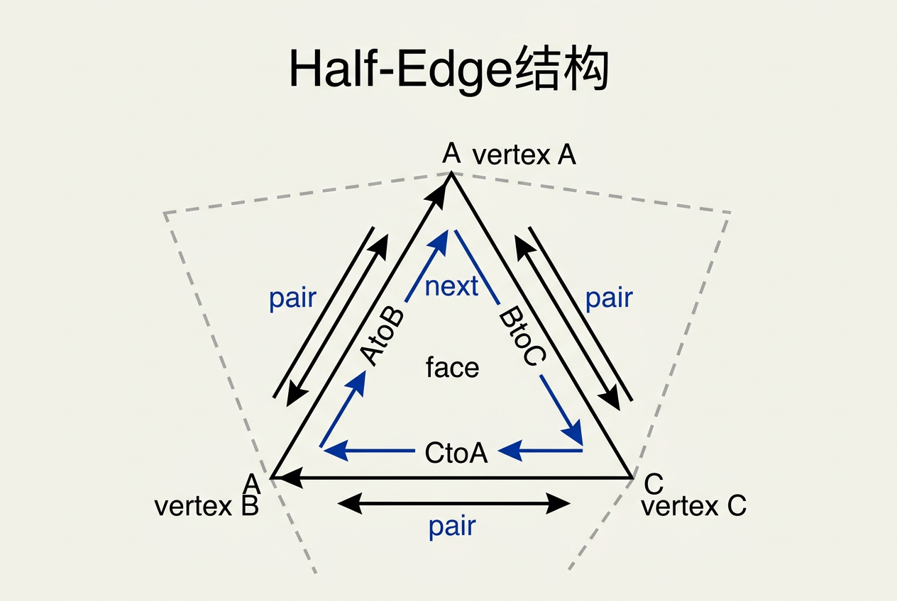
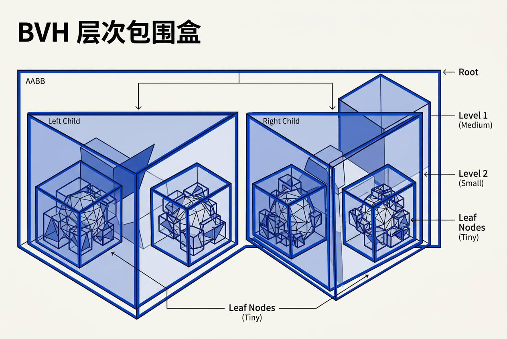
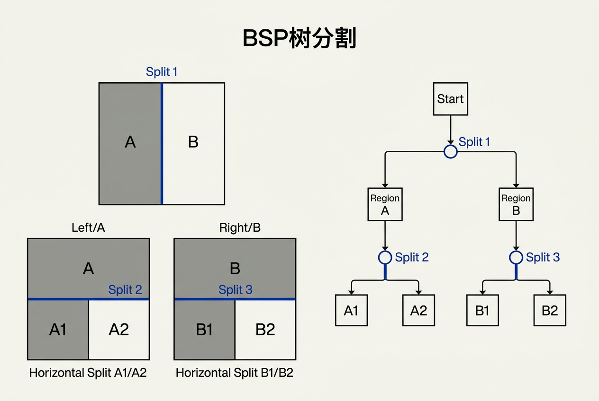

第12章：图形学数据结构 — 零基础讲义
讲义说明
本讲义基于 Steve Marschner & Peter Shirley 所著《虎书5》第5版第12章（p.291-334）。
本章是图形学的"工程基础"——它告诉你：怎么存 3D 物体？怎么快速找到我看不见的三角形？怎么让"加速结构"正确？
学完本章，你将真正理解 mesh 表示、场景图、空间加速结构（BSP/Octree/kd-tree）。
本版插画采用 Guizang 材质插画风格重新绘制。
学习目标
- 掌握3 种 Mesh 数据结构：triangle-to-vertex / 索引化 / 邻接表示
- 理解流形（Manifold）与非流形的概念——用"完整布料"类比
- 掌握3 种边/邻接数据结构：Winged-Edge / Half-Edge / Full-Edge
- 理解场景图（Scene Graph）的层次结构
- 掌握空间数据结构：Uniform Grid / BVH / BSP / kd-tree
- 理解光线求交加速的核心思想
- 掌握深度排序算法：Painter's / BSP / 透明排序
- 了解Cache 友好的内存布局（tiling arrays）
12.0 三角形网格到底长什么样？
在正式进入数据结构之前，我们先搞清楚三角形网格（Triangle Mesh）的基本面貌——这是本章讨论一切数据结构的"原材料"。
12.0.1 什么是三角形网格？
三角形网格 = 用一堆小三角形拼成一个 3D 物体。想象一个乐高模型：每一块乐高是一个三角形，几十块乐高拼在一起就成了一个球/人/车。
在图形学里：
- 顶点（Vertex）：空间中的点，比如
(1.0, 0.5, 2.0) - 三角形（Triangle）：由 3 个顶点组成的面
- 网格（Mesh）：一堆三角形拼在一起
12.0.2 一个具体例子：4 个三角形拼成的金字塔
Top(0,1,0)
/\
/ \
/ \
/______\
B(-1,0,1) C(1,0,1)
/\ /\
/ \ / \
/____\______/____\
A(-1,0,-1) D(1,0,-1)这个金字塔由 4 个三角形组成：
| 面 | 顶点 |
|---|---|
| 前面 △Top-AB | (0,1,0) - (-1,0,-1) - (-1,0,1) |
| 右面 △Top-BC | (0,1,0) - (-1,0,1) - (1,0,1) |
| 后面 △Top-CD | (0,1,0) - (1,0,1) - (1,0,-1) |
| 左面 △Top-DA | (0,1,0) - (1,0,-1) - (-1,0,-1) |
12.0.3 一个实际的工程问题
假设你想在游戏里放一个100 万个三角形的恐龙模型。你怎么存？
| 做法 | 存储方式 | 代价 |
|---|---|---|
| 做法 1（最笨） | 把 100 万个三角形的 300 万个顶点全部列出来 | 3 倍内存浪费 |
| 做法 2（聪明） | 50 万个唯一顶点 + 300 万索引 | 省内存 |
| 做法 3（更聪明） | 顶点 + 邻接信息 | 支持细分/简化/平滑着色 |

12.1 三角形网格（Triangle Meshes）
12.1.1 流形 vs 非流形——"完整布料" 类比
流形（Manifold）= "完整布料"
想象你拿一块完整的布料：
- 布料的每一小块都是平整的，像一个小圆盘
- 你可以在布料上任意一点画个小圈——圈内都是连续、平整的布料这就是流形的直觉：表面上每个点的邻域都像一个扁平的小圆盘。
非流形 = "布料破了一个洞"或者"多块布料粘在一起"
三种常见的非流形案例：
案例 1：一条边被三个面共享（非流形边）
面A 面B
\ /
\ /
\ /
\ /
共享边 e
/ \
/ \
/ \
/ \
面C想象三块布料的边缘粘在同一条线上——这就像三扇门共用一个门框。这在现实里不合理。
在正常流形网格里，一条边恰好被 2 个三角形共享。如果一条边被 3 个（或 1 个）三角形共享，它就非流形。
案例 2：一个顶点周围不连续（非流形顶点）
面A 面B
/\ /\
/ \ / \
/ \ / \
/______\ /______\
^ 共享顶点 v想象两片布料只在一个角上碰了一下——它们没有共享边，只有一个点碰在一起。
案例 3：边界边（合法！）
如果一个网格是一块"矩形布料"（没有围成封闭体），它的最外圈边只有 1 个三角形——这叫边界边，是合法的。
检查方法——"一圈测试"：
对每个顶点，绕着它的所有三角形走一圈，看能不能连续不断地回到起点。如果能，就是流形。如果走着走着撞到边界或分叉，就是非流形。
12.1.2 方向（Orientation）——三角形的顶点顺序
方向 = "三角形顶点的顺序"——决定"哪面朝外"
两种约定：
| 约定 | 描述 | 使用 |
|---|---|---|
| 逆时针（CCW, Counterclockwise） | 从外面看，顶点按逆时针排列 | OpenGL 默认 |
| 顺时针（CW, Clockwise） | 从外面看，顶点按顺时针排列 | DirectX 默认 |
为什么重要？
- 方向决定了三角形的法线方向（右手定则）
- 背面剔除（back-face culling）依赖方向判断"哪面朝相机"
不可定向的表面——Möbius 带：
还记得那个Möbius 带吗？——一张纸扭了半圈后粘在一起。它只有一个面。你在上面选一个方向走一圈走回来，方向反了。几乎所有图形学算法都会在这种表面上失败，因为法线方向无法一致地定义。
12.1.3 共享 vs 独立顶点
| 模式 | 内存 | 优缺点 |
|---|---|---|
| 共享顶点（索引化） | 50 万顶点 + 300 万索引 → 省内存 | UV 可能不连续 |
| 独立顶点 | 300 万顶点 → 3 倍内存 | UV 完全灵活，每个三角形独立 |
实际中怎么选？
游戏开发中最常用的是索引化网格（Indexed Mesh）：每个顶点存一份（位置、法线、UV、切线等），三角形用 3 个顶点索引表示。GPU 硬件也为此做了优化。
12.1.4 Triangle-to-Vertex 网格（最直接的表示）
核心数据结构：
struct Mesh {
Vertex vertices[N]; // 顶点数组
int indices[3 * M]; // M 个三角形的顶点索引
};变种 1：独立三角形（无索引）
struct Tri {
Vertex v0, v1, v2;
};
Tri tris[M]; // 优点：简单。缺点：内存大 3 倍变种 2：Triangle Strip（三角形带）
N 个顶点 → N-2 个三角形（省 3 倍内存）。
顶点: [v0, v1, v2, v3, v4, v5]
三角形: (v0,v1,v2), (v1,v3,v2), (v2,v3,v4), (v3,v5,v4), ...注意奇偶三角形的顶点顺序相反——这是为了保持 CCW。
变种 3：Triangle Fan（三角形扇）
1 个中心顶点 + N 个环形顶点 → N-2 个三角形。
顶点: [center, v0, v1, v2, v3]
三角形: (center,v0,v1), (center,v1,v2), (center,v2,v3)适合圆形/扇形 mesh（如 pizza、扇叶）。
12.1.5 邻接信息——为什么要知道"谁挨着谁"？
问题：只存顶点 + 索引的网格，你不知道一个三角形的邻居是谁。
为什么需要邻居？
场景 1：细分（Subdivision）
你想把网格变平滑，生成更多的三角形。Catmull-Clark 细分需要每个顶点的邻居三角形的法线。没有邻接信息 → 你算不出来。
场景 2：简化（Simplification）
你想把 100 万三角形的模型简化为 1 万三角形（QEM 算法）。边折叠需要知道哪些三角形共享那条边。
场景 3：平滑着色
一个顶点被 6 个三角形共享，你想用6 个三角形法线的平均值作为该顶点的法线。没有邻接信息，你不知道哪 6 个。
邻接的代价：建立邻接信息需要扫描整个网格——O(N) 时间、O(N) 内存。因此游戏引擎通常只在"加载时"构建一次邻接，运行时只读。
12.1.6 三种边/邻接数据结构
1. Winged-Edge（翼边结构）
Winged-Edge = "一条边知道两侧的面，以及每侧面的 4 条邻边"
struct WingedEdge {
Vertex v0, v1; // 两个端点
Face f0, f1; // 两侧的面
Edge e0_ccw, e0_cw; // f0 侧的逆时针/顺时针邻边
Edge e1_ccw, e1_cw; // f1 侧的逆时针/顺时针邻边
};遍历示例：从面 A 出发走一圈：
- 从面 A 出发，看到边 e1（AB）。e0_ccw 指向 e2（BC），e0_cw 指向 e3（CA）
- 沿着 e0_ccw 走到 e2（BC）。e2 的 f0 = A（当前），f1 = D（相邻）
- 从 e2 的 e0_ccw 走到 e3（CA）。e3 的 f0 = A，f1 = E
- 从 e3 的 e0_ccw 走，回到 e1（AB）——遍历完成
Winged-Edge 的"翅膀"：每条边都像一只蝴蝶，向两侧展开 4 个翅膀（邻边）。只要你从面 A 出发，跟着"翅膀"走，就能遍历面 A 的所有边，然后跳到相邻面继续。
优缺点：
- ✓ 从一条边出发，可以得到两侧所有邻边和邻面
- ✗ 每条边 8 个指针，内存开销大（30+ 字节/边）
2. Half-Edge（半边结构）—— 图形学最流行
Half-Edge = "把每条边拆成 2 个有向半边"——图形学最流行的邻接结构
核心思想：一条"无向边" AB 被拆成两个"有向半边"：A→B 和 B→A。每个半边属于一个面。

逆时针约定：
- 每个面内的所有半边按逆时针方向排列成一个循环
next指针指向本面的下一条半边（逆时针方向）pair指针指向反向的半边（属于相邻面）
struct HalfEdge {
Vertex vertex; // 半边的起点
HalfEdge next; // 本面下一条半边（逆时针）
HalfEdge pair; // 反向半边（相邻面的）
Face face; // 所属的面
};| 对比项 | Winged-Edge | Half-Edge |
|---|---|---|
| 指针数/边 | 8 个 | 5 个（拆成 2 个半边） |
| 遍历面循环 | 需要 4 个翅膀指针 | 天然是循环（next 形成闭环） |
| 内存 | ~30 字节/边 | ~15 字节/半边 |
3. Full-Edge
结合 Winged-Edge 和 Half-Edge 的思想——更完整、更大。不常用。
因为遍历面循环是图形学最常见的操作（细分、简化、平滑着色）。Half-Edge 的 next 指针天然形成"面的循环"——沿 next 走一圈就是绕面一圈。Winged-Edge 需要查 4 个翅膀指针才能确定下一条边，既慢又容易出错。
12.2 场景图（Scene Graph）
12.2.1 核心思想
场景图 = "树形结构的 3D 场景表示"——回答"什么东西在什么地方？"
为什么不用扁平列表？
假设你要做一个汽车游戏：
- 有 100 辆车在路上跑
- 每辆车有车身、4 个轮子、2 个车门
- 每棵树/路灯/房子也是独立对象
如果用扁平列表：每帧要更新 100 辆车的 700 个子部件的位置 → 灾难。
用场景图：
- 每辆车是一个节点
- 车身的变换会影响所有子节点（轮子、车门）
- 全车作为一个整体被移动
3 大优势：
- 共享实例：同一棵树出现 100 次 → 只存 1 份几何数据
- 层次变换：车轮跟随车体 → 自动计算位置
- 逻辑分组：灯光、相机、可碰撞对象分组管理
12.2.2 简单例子：铰链摆
World
└── Pendulum
├── UpperArm (绕顶部旋转)
│ └── LowerArm (绕肘部旋转)
│ └── Bob (在末端平移)当你旋转 UpperArm 时，LowerArm 和 Bob 都跟着动。这就是场景图的层次变换——每个节点的变换是相对于父节点的。
12.2.3 复杂例子：车在渡轮上
World
├── Ferry (沿水面平移)
│ ├── Body
│ ├── Deck
│ ├── CarA (在甲板上平移 + 自身旋转)
│ │ ├── Body
│ │ ├── WheelFL
│ │ ├── WheelFR
│ │ ├── WheelRL
│ │ └── WheelRR
│ └── CarB
└── Water (海面渲染)渡轮移动 → 甲板上的所有车都跟着走。但每辆车还可以独立旋转（方向盘）——因为 CarA 是 Ferry 的子节点。
实际渲染时，遍历场景图，计算每个节点的世界矩阵：
CarA.WorldMatrix = Ferry.WorldMatrix × CarA.LocalMatrix
WheelFL.WorldMatrix = CarA.WorldMatrix × WheelFL.LocalMatrix12.2.4 场景图实现细节
5 种节点类型：
| 类型 | 职责 |
|---|---|
| Group | 容器节点，无几何体 |
| Transform | 携带位置/旋转/缩放矩阵 |
| Geometry | 实际 mesh + 材质 |
| Light | 携带光照参数（颜色、强度、位置） |
| Camera | 相机参数（视场、近远平面） |
Culling（视锥体裁剪）：
遍历场景图时，如果某节点的包围盒不在视锥体内，整棵子树跳过。这是场景图最重要的性能优化。
遍历算法：
| 算法 | 特点 | 适用 |
|---|---|---|
| DFS（深度优先） | 先深入子树 | 立即模式渲染 |
| BFS（广度优先） | 按层遍历 | 状态排序优化 |
12.3 空间数据结构（Spatial Data Structures）
12.3.1 为什么需要空间数据结构？
没有空间数据结构的渲染：
for 每个像素:
发射一条光线
for 每个三角形: # O(N)！
测试光线与三角形求交100 万个三角形 × 200 万像素 = 2 万亿次测试。不可能实时。
有空间数据结构的渲染：
for 每个像素:
发射一条光线
查询 BVH/BSP 树 # O(log N)！
只测试少量候选三角形100 万个三角形 → 只测试 ~20 个候选三角形。差了 10 万倍。
应用场景：
- 光线追踪：快速找到光线击中的物体
- 碰撞检测：找到两个物体的最近三角形
- 视锥裁剪：找到视体外的物体
- 邻居查询：找到某点附近的物体
12.3.2 均匀网格（Uniform Grid）
最简单的空间结构——把空间切成"方砖"
class UniformGrid:
def __init__(self, bbox, nx, ny, nz):
# bbox = 场景包围盒
# 切成 nx × ny × nz 个 cell
self.cells = [[] for _ in range(nx * ny * nz)]
def insert(self, obj, obj_bbox):
# 找到物体中心所在的 cell
cell = self.xyz_to_index(obj_bbox.center())
self.cells[cell].append(obj)
def query(self, point):
cell = self.xyz_to_index(point)
return self.cells[cell] # 只检查这个 cell优缺点：
- ✓ 构造简单，一步到位
- ✓ 查询 O(1)——常数时间找到 cell
- ✗ 不均匀场景效率低——空旷处大量空 cell，密集处 cell 过载
- ✗ Cell 大小难选——太大=加速不够，太小=空 cell 太多
12.3.3 光线与均匀网格（DDA 算法）
核心算法——3D DDA（Digital Differential Analyzer）：
- 找到光线的起始 cell
- 计算到下一个 X cell 边界的距离
t_xnext - 计算到下一个 Y cell 边界的距离
t_ynext - 取较小的——沿那个方向移动一格
- 重复直到击中物体或离开网格
t_xnext = (cellX.right - origin.x) / dir.x
t_ystep = (cell_width) / dir.y
y_ystep = ...
if t_xnext < t_ynext:
沿 X 方向移动一格
t_xnext += t_xstep
else:
沿 Y 方向移动一格
t_ynext += t_ystep12.3.4 包围体层次（BVH, Bounding Volume Hierarchy）
BVH = "盒子里套盒子"——递归地将场景分割

World (AABB)
/ \
Building (AABB) Car (AABB)
/ \ | \
Floor (AABB) Wall Body Wheels
/ \
Tri1 Tri2光线查询算法：
function intersect(ray, node):
if 光线不击中 node.AABB:
return 无命中
if node 是叶子:
return 测试所有三角形
# 分别测试左右子节点
return min(intersect(ray, left), intersect(ray, right))AABB vs OBB：
| 类型 | 特点 |
|---|---|
| AABB（轴对齐包围盒） | 与坐标轴对齐 → 求交最快（6 个 slab test） |
| OBB（有向包围盒） | 更紧，但求交更慢 |
12.3.5 BVH 的构造方法
自顶向下（Top-Down）——最常用：
function build_bvh(triangles):
if len(triangles) <= THRESHOLD:
return 叶子节点
# 1. 计算所有三角形的包围盒
aabb = compute_aabb(triangles)
# 2. 找最长的轴（x/y/z 中范围最大的）
axis = argmax(aabb.extent)
# 3. 沿该轴排序并分割
sorted_tris = sort(triangles, key=axis)
mid = len(sorted_tris) // 2
# 4. 递归构建
left_child = build_bvh(sorted_tris[:mid])
right_child = build_bvh(sorted_tris[mid:])
return 内部节点(left_child, right_child)自底向上（Bottom-Up）：
每个三角形是一个叶子，然后不断合并两个"最近"的节点。复杂度更高，但有时更优。
12.3.6 kd-tree（K-Dimensional Tree）
kd-tree = "用平面切割空间"——和 BVH 的区别
| 对比项 | BVH | kd-tree |
|---|---|---|
| 分割方式 | 包围盒子集 | 平面切割空间 |
| 分割平面 | 不一定穿过三角形 | 穿过空间 |
| 对象归属 | 三角形归入子节点 | 三角形可能跨平面（需切割） |
| 查询 | O(log N) | O(log N) 但更少 AABB 测试 |
光线查询：每层只需要做 1 个平面测试——判断光线在平面的哪一侧。
优势：对静态场景，kd-tree 通常比 BVH 更快（尤其是 CPU 光线追踪）。
劣势：构造更复杂，动态场景更新慢。
12.3.7 SAH（Surface Area Heuristic）——"飞镖房间"类比
SAH = "飞镖房间"
想象你站在一个大房间的门口，往房间里随机扔飞镖。
- 场景 A：房间里有两堆东西——左边一堆小物件（占 5% 空间），右边一堆大箱子（占 45% 空间），还有 50% 是空地。
- 飞镖击中左边小物件的概率 ≈ 5%
- 飞镖击中右边大箱子的概率 ≈ 45%
SAH 的核心思想：分割平面放在哪里，决定了"飞镖"（光线）期望击中多少次。
公式：
| 参数 | 含义 |
|---|---|
C_trav | 遍历一个节点的固定成本（~1） |
p_left | 光线穿过左子节点的概率 ≈ SurfaceArea(left) / SurfaceArea(parent) |
p_right | 光线穿过右子节点的概率 ≈ SurfaceArea(right) / SurfaceArea(parent) |
N_left, N_right | 左右子节点的三角形数量 |
实际构造时，尝试多个分割位置，选择使 Cost 最小的那个。
直觉理解：你希望左右两边的"房间"（包围盒）表面积都尽可能小，同时两边的三角形数尽量均衡。这样光线无论穿到哪一边，要测试的东西都少。
12.4 深度排序与隐藏面消除
12.4.1 Painter's Algorithm（画家算法）
思想：画远处的，再画近处的——远的被近的覆盖
# 按深度排序（从远到近）
triangles.sort(key=lambda t: -t.center.z)
for tri in triangles:
draw(tri)三个三角形的例子：
三角形A: (0, 0, 10), (1, 0, 10), (0, 1, 10) → 最近（z=10）
三角形B: (0, 0, 20), (2, 0, 20), (0, 2, 20) → 中间（z=20）
三角形C: (0, 0, 30), (3, 0, 30), (0, 3, 30) → 最远（z=30）
Painter's Algorithm 的排序：C(z=30) → B(z=20) → A(z=10)致命问题 1——深度循环（Depth Cycle）：
三角形A
/ \
/ \
/ X \
/ 互相遮挡 \
/ \
/________________\
三角形BA 和 B 互相遮挡——A 的一部分在 B 前面，另一部分在 B 后面。无法确定谁先画。这叫做深度循环。
致命问题 2——三角形相交：
三角形A: (0,0,0), (10,0,10), (0,10,10)
三角形B: (10,0,0), (0,0,10), (10,10,10)这两个三角形穿过了对方——没有一前一后的关系。
12.4.2 BSP Tree（二叉空间分割树）
BSP Tree = "用平面递归切割空间，解决深度循环"

核心思想：选一个三角形作为"分割平面"，把其他三角形分为"前面"和"后面"两组。递归处理。
4 种情况：
情况 1：三角形完全在分割平面的前面
如果三角形的所有三个顶点到平面的有符号距离都是正数，则它完全在平面前面。
例子：分割平面是z = 5，三角形顶点为(0,0,10), (1,0,11), (0,1,10)——所有 z 值都 > 5。这个三角形被放入"前面"子树继续处理。
情况 2：三角形完全在分割平面的后面
如果三角形的所有三个顶点到平面的有符号距离都是负数，则它完全在平面后面。
例子：分割平面是z = 5，三角形顶点为(0,0,1), (1,0,2), (0,1,1)——所有 z 值都 < 5。这个三角形被放入"后面"子树。
情况 3：三角形跨越分割平面
如果三角形三个顶点中有的在前、有的在后，则被平面切成了两部分。
例子：分割平面是z = 5，三角形顶点为(0,0,1), (1,0,10), (0,1,3)——顶点(1,0,10)在前面，其余在后面。处理方法是：用平面切割这个三角形，生成两个子三角形——一个在前面、一个在后面，分别放入对应的子树。
情况 4：三角形恰好躺在分割平面上
如果三个顶点到平面的距离都是 0（或接近 0），则三角形和分割平面重合。
例子：分割平面是z = 5，三角形顶点为(0,0,5), (2,0,5), (0,2,5)——所有 z 值等于 5。这个三角形被放在当前节点，不送入子树。绘制时在当前节点位置绘制。
BSP 树的绘制算法（画家顺序）：
function draw_bsp(node, camera_position):
if node 是叶子:
return
side = camera_position 相对于 node.plane 在哪一侧
if side == "前面":
draw_bsp(node.back) # 先画后面的
draw(node.triangle) # 再画当前三角形
draw_bsp(node.front) # 最后画前面的
else:
draw_bsp(node.front)
draw(node.triangle)
draw_bsp(node.back)BSP 树的保证：无论相机在哪个位置，这个"后→中→前"的遍历顺序都正确——没有深度循环。
缺点：BSP 树的构造是静态的，场景移动/变形时需要重建。因此 Quake 系列引擎用它来组织静态地图。
12.5 Cache 友好的内存布局
12.5.1 内存层次
现代 CPU 的"内存阶梯"：
| 层级 | 大小 | 延迟 | 相对速度 |
|---|---|---|---|
| L1 Cache | ~32 KB | 1 ns | ~10 个 CPU 周期 |
| L2 Cache | ~256 KB | 3 ns | 30 个周期 |
| L3 Cache | ~8 MB | 12 ns | 120 个周期 |
| 主存（RAM） | ~16 GB | 100 ns | 1000 个周期 |
从 L1 到主存：慢了 100 倍！
核心洞察：如果你的数据不在 cache 里，CPU 就得等 100 个周期去主存拿——这是现代渲染最主要的瓶颈之一。
12.5.2 AoS vs SoA
Array of Struct（AoS）：
struct Vertex {
float x, y, z; // 位置
float nx, ny, nz; // 法线
float u, v; // UV
};
Vertex vertices[N];存法：(x,y,z, nx,ny,nz, u,v), (x,y,z, nx,ny,nz, u,v), ...
Struct of Array（SoA）：
float xs[N], ys[N], zs[N]; // 所有位置
float nxs[N], nys[N], nzs[N]; // 所有法线
float us[N], vs[N]; // 所有 UV存法：(x, x, x, ...), (y, y, y, ...), (z, z, z, ...), ...
为什么 SoA 经常更快？
假设你只关心"顶点位置"（比如做变换矩阵计算）：
- AoS：加载一个顶点的数据 → cache 里装满了你暂时不用的法线和 UV
- SoA：连续加载
xs数组 → cache 里全部是你要的位置数据
SIMD 友好：SoA 可以一次加载 4 个 x 值做向量化。
12.5.3 Tiling（分块阵列）
Tiling = "把大数组切成小方块，方块内连续存储"
传统行优先:
[0,0][0,1][0,2]...[1,0][1,1][1,2]...
Tiling (2×2 方块):
Tile0: [0,0][0,1][1,0][1,1] (连续)
Tile1: [0,2][0,3][1,2][1,3] (连续)
Tile2: [2,0][2,1][3,0][3,1] (连续)
...为什么 Tiling 好？
如果你做2D 邻域查询（比如纹理滤波、光线追踪像素块），传统行优先需要跳到很远的位置读数据（cache miss）。Tiling 保证同一方块内的数据在内存中紧邻——cache 命中率大幅提升。
光线追踪中的应用：
- Ray Packets：一组相邻像素的光线组成一个"包"，它们访问的 AABB 和三角形很可能在同一个 tile 内
- BVH 构造也用 tiling 优化 cache
12.6 综合应用
12.6.1 高级 Mesh 处理
简化（Simplification）：
输入：高密度 mesh（100k 三角形）
输出：低密度 mesh（10k 三角形）
核心：QEM（Quadric Error Metrics），每次折叠误差最小的边
细分（Subdivision）：
输入：低密度 mesh
输出：平滑的高密度 mesh
核心：Catmull-Clark / Loop，每次迭代加倍三角形数
重网格化（Remeshing）：
输入：任意（可能劣质）mesh
输出：均匀高质量三角形 mesh
应用：3D 打印、有限元仿真
12.6.2 光线追踪流水线
1. 加载场景
2. 构造 BVH
3. 对每个像素生成 primary ray
4. 查询 BVH：
a. 测试根节点 AABB
b. 递归测试子节点 AABB
c. 命中叶子 → 测试实际三角形
5. 命中后计算着色（BRDF + 直接光 + 间接光）
6. 递归处理反射/折射性能瓶颈：BVH 构造是一次性的（加载时），但 BVH 查询是每帧每像素的。所以查询必须极快。
现代优化：
- Multi-BVH：多个 BVH 树合并查询
- BVH 压缩：用 8 字节而不是 24 字节存一个 AABB
- GPU BVH：用 compute shader 在 GPU 上构造和遍历
12.6.3 现代游戏引擎的数据结构
Unreal Engine 5 Nanite：
- 虚拟几何体系统——显存容不下整个场景的三角形
- Meshlet（~128 顶点/块）+ BLAS + TLAS 层次 BVH
- 直接渲染数亿三角形
Unity DOTS / ECS：
- Entity Component System——数据和逻辑分离
- BatchRendererGroup（BRG）按 mesh+材质合并绘制
- 避免 CPU 端的 draw call 瓶颈
DirectX 12 / Vulkan Mesh Shader：
- 把整个 mesh 作为计算负载上传到 GPU
- Bindless Resource：不绑定具体资源，随时引用
全章总结
讲义核心洞察：图形学数据结构 = "用最少的内存装下世界，用最少的查询击中目标"——
- 三角形网格：索引化 / 独立 / strip / fan
- 流形："完整布料"——每个点周围像圆盘
- Winged-Edge：8 指针/边，翅膀遍历
- Half-Edge：5 指针/半边，逆时针循环
- 场景图：树形结构 = 共享实例 + 层次变换
- 空间加速：Uniform Grid → BVH → kd-tree → BSP
- SAH："飞镖房间"——最小化期望求交次数
- Cache 友好：SoA + Tiling
| 主题 | 核心 | 关键洞察 |
|---|---|---|
| Triangle Fan | 1 中心 + N-1 边缘 → N-2 三角形 | 适合扇形 mesh |
| Triangle Strip | N 顶点 → N-2 三角形（省 3 倍内存） | 奇偶翻转保持 CCW |
| Winged-Edge | 8 指针 / 边 | 遍历面需 4 个翅膀 |
| Half-Edge | 5 指针 / 半边 | next 形成循环，最流行 |
| DDA 算法 | t_xnext = (cellX.right - origin.x) / dir.x | Bresenham 在 3D 的扩展 |
| BVH 查询 | O(log N) 平均 | 先测近子节点可加速 |
| SAH | Cost = C_trav + p_left·N_left + p_right·N_right | 选择 Cost 最小的分割 |
| BSP 4 情况 | 全前 / 全后 / 跨越 / 共面 | 跨越时需切割三角形 |
| Tiling | L1 cache 命中 → 100 倍加速 | 2D 邻域查询的关键 |
- Manifold（流形）：完整布料——每个点邻域像圆盘
- Half-Edge（半边）：把无向边拆成两个有向半边
- Scene Graph（场景图）：树形结构组织 3D 场景
- BVH：层次包围盒——俄罗斯套娃式
- kd-tree：用平面切割空间
- SAH：表面积启发式（飞镖房间）
- BSP：二叉空间分割——画家算法无循环
- Painter's Algorithm：画家算法——远→近
- SoA：Struct of Array——Cache 友好
- Tiling：分块存储——2D 邻域查询优化
一句话总结：图形学数据结构 = Mesh 表示（索引化 / Half-Edge）+ 场景图（树形层次）+ 空间加速（BVH/SAH/kd-tree/BSP）+ Cache 优化（SoA/Tiling）。
下一步：第 13 章将讲解采样与重建——理解"随机采样、重要性采样、Metropolis 算法"。这是通往路径追踪的桥梁。